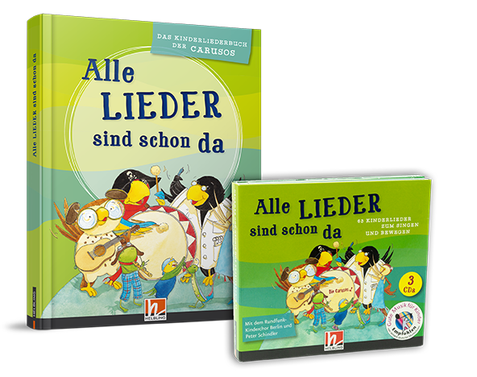

|

|
Gefallen Euch die Lieder?
63 Kinderlieder mit Peter Schindler und Band und dem Rundfunk-Kinderchor Berlin sind auch auf CD zu finden - und sogar 190 Kinderlieder im gleichnamigen Liederbuch „Alle Lieder sind schon da!“.
Jetzt bestellen auf www.helblingmusik4kids.de!
Diese vergnügliche Liederreise garantiert abwechslungsreichen Hörgenuss für Kinder ab 2 Jahren und die ganze Familie – zu Hause und unterwegs. Beliebte traditionelle Kinderlieder und neue Kinderhits sowie fremdsprachige Lieder mit Tempo, Witz und vielen Überraschungen – zu Jahreszeiten, Festen und Tagesabläufen. Peter Schindlers wunderbare Arrangements sorgen für hochwertigen Hörgenuss, der rundum Spaß macht!